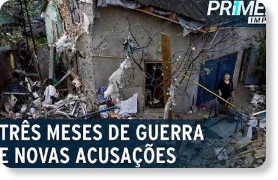
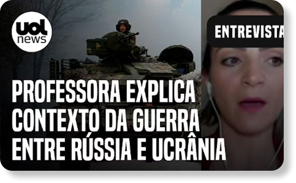
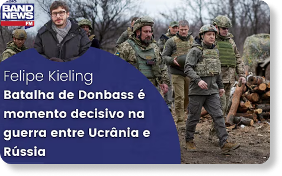

Os eventos de 2014 são cruciais para a situação atual. Naquela época, rebeldes apoiados pela Rússia tomaram prédios governamentais em vilas e cidades do leste da Ucrânia. Intensos combates deixaram partes de Luhansk e Donetsk, na região de Donbass, nas mãos de separatistas apoiados pela Rússia.
As áreas controladas pelos separatistas em Donbass ficaram conhecidas como Luhansk e República Popular de Donetsk, mas o governo ucraniano em Kiev afirma que as duas regiões estão, na verdade, ocupadas pelos russos. As repúblicas autodeclaradas não são reconhecidas por nenhum governo, exceto a Rússia e seu aliado próximo, a Síria.


EU TEREI A MINHA VINGANÇA
Momento decisivo na guerra da Ucrânia
Por que Rússia quer dominar o Donbass
Guerra completa 3 meses
  